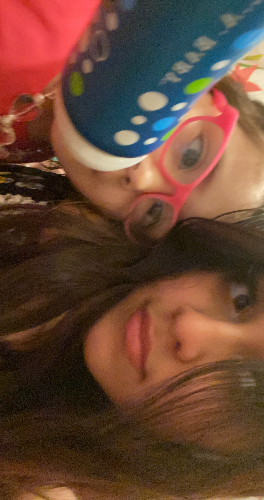

On the left is my little sister and I am on the right.
Personal Background: I am from Asheville, North Carolina.
Professional Background: I have worked at McDonalds. I currently work at Cava.
Academic Background: High school diploma and pursuing a Bachelor of Science degree in Software Engineering in Computer Science with two minors in Mathematics and Computer Engineering.
Background in this Subject: My background experience in this subject is from the classes I have already taken at UNCC.
Primary Computer Platform: Asus Zenbook Windows 11.
Courses I'm Taking & Why:
ITSC 3688 - Computers and Their Impact on Society - Required classe for my Major
ITSC 3155 - Software Engineering - Required class for my Major
ITSC 2181 - Introduction to Computer Systems - Required class for my Major
ITIS 3135 - Web-Based Application Design and Development - Required class for my Major
ECGR 2104 - Computer Engr Programming II - Required class for my Minor
Funny/Interesting Item to Remember Me by: I enjoy learning math.